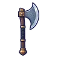
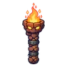
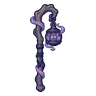
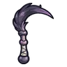
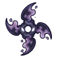

คนกรอกแสง
มอนธาตุมืด Lv 76–86
เจอที่
| แมพ | โซน | Lv | ภูมิภาค |
|---|---|---|---|
| ย่านริมคลอง | 78–86 | เมืองหอระฆัง | |
| ย่านริมคลอง | โรงเทียน | 82–86 | เมืองหอระฆัง |
| ประตูน้ำเก่า | 76–86 | เมืองหอระฆัง | |
| ประตูน้ำเก่า | เฟืองยักษ์ประตูน้ำ | 83–86 | เมืองหอระฆัง |
| ย่านโกดังริมน้ำ | 76–86 | เมืองหอระฆัง | |
| อู่ต่อเรือร้าง | 76–86 | เมืองหอระฆัง | |
| อู่ต่อเรือร้าง | โครงเรือไม่เสร็จ | 83–86 | เมืองหอระฆัง |
ค่าสถานะตามเลเวล
| Lv | HP | ATK | DEF | MDEF | EXP | Job |
|---|---|---|---|---|---|---|
| 76 | 49,532 | 184–277 | 33 | 23 | 108 | 81 |
| 81 | 59,906 | 199–299 | 36 | 24 | 115 | 86 |
| 86 | 71,817 | 215–323 | 38 | 26 | 121 | 91 |
ตีด้วยธาตุไหนดี
แรงขึ้น: ศักดิ์สิทธิ์ ×1.25
เบาลง: วิญญาณ ×0.75 พิษ ×0.5 มืด ×0 อมตะ ×0
วัตถุดิบที่ดรอป
| ของ | โอกาส | |
|---|---|---|
| ขวดแสงร้าว | 55% | 1 ชิ้น (15% ได้ 2) |
อุปกรณ์ที่ดรอป (7)
| ของ | โอกาส |
|---|---|
 ขวานเหล็กลายน้ำ | 0.25% |
 คบเพลิงหินโกเลม | 0.25% |
 ตะเกียงหมอกเงา | 0.12% |
 เคียวคู่คอนกกระสาเงา | 0.12% |
 ดาวยักษ์ภูตหมอกเงา | 0.06% |
| 0.06% | |
| 0.03% |
สกิล
วาร์ป (Lv 25+) · วาร์ป (Lv 60+) · ม่านเวท (Lv 60+)